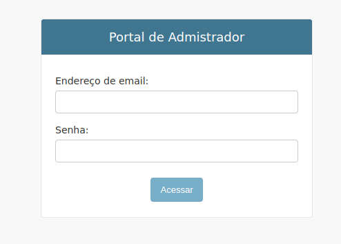
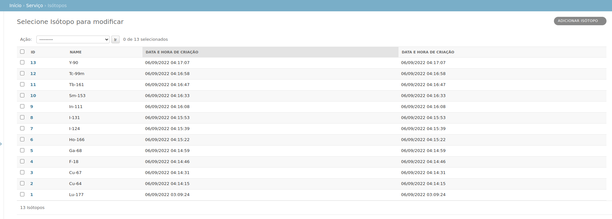
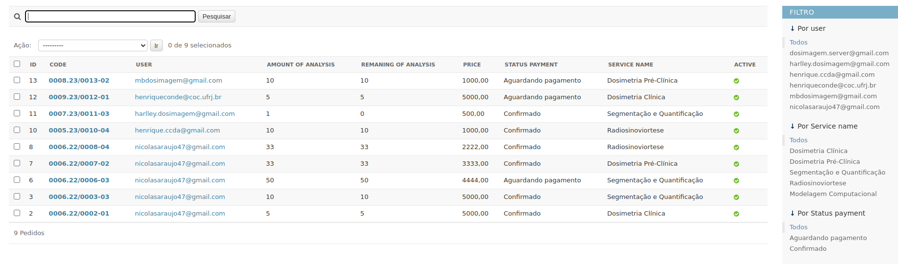
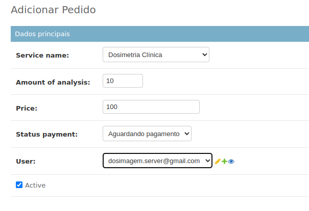
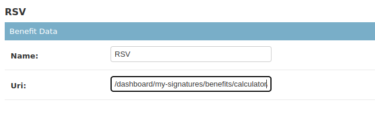
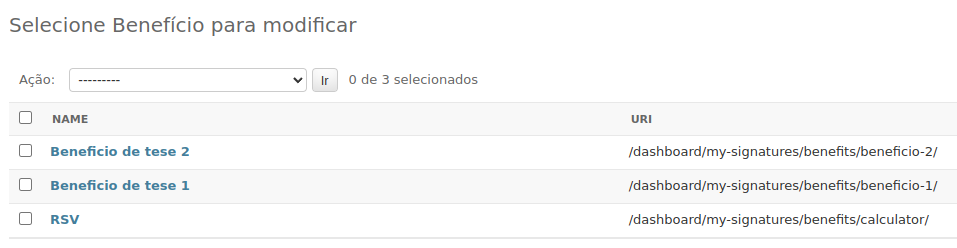
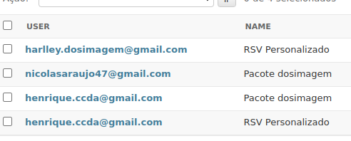

Área administrativa
Principais funcionalidades da área administrativa da plataforma
Acessando a plataforma
Para se logar na área administrativa da plataforma é necessário um usuário com permissões adminitrativas.
Para acessar a pagina de login base acessar a rota /dosimagem/admin/

Funcionalidades da plataforma
Aba serviço temos as seguintes informações:
- Análises de Radionoviortese
- Análise de Segmentação
- Calibrações
- Dosimetria clínicas
- Dosimetria preclínicas
- Isótopos
- Pedidos

Criação de isótipos
Em isótopos temos uma lista dos isotopos que são mostrados nas analises clínicas e pre-clínicas

Caso se queira adicionar um novo isótopo basta clicar no botão adicionar.
Criação de novos pedidos
Em pedidos temos a lista de pedidos contratados pelos os usários

Para cria um pedido basta clicar no botão adicionar.

Nele temos os campos:
- Service name: Nome do seriço contratado
- Amount of Analysis: Quantidade de analises no pedido contratado
- Price: Preço total
- Payment status: Estatus de pagamento
- User: Usuario dono do pedido
Acessando informações da Analises
Clicando no nome da análise podemos ver as informações de uma determinada analise.

Inicialmente o campo do relátorio estará fazio, apenas depois que a analise estiver concluida que se deve colocar se deve adicionar o .pdf. Assim que adiciona o arquivo ficará disponivel para o usuário fazer o donwload.
Calibrações
Clicando no nome da calibração podemos ver as calibração cadastra do usuario.

Códigos
- Pedido:
usuario_id.ano/pedido_id-códido do serviço - Dosimetrias:
usuario_id.pedido_id.isotopo.ano/analise_id-códido do serviço - Radionoviortese:
usuario_id.pedido_id.isotopo.ano/analise_id-códido do serviço - Segmentação:
usuario_id.pedido_id.ano/analise_id-códido do serviço
Os códigos dos servições são:
- Dosimetrias clínica:
01 - Dosimetrias preclínica:
02 - Segmentação:
03 - Radionoviortese:
04 - Modelagem computacional:
05
Habilitando a calculadora
A calculadora foi adicionado como um beníficio.

É possivel ter varios benificios

Os benificios por suas vez estão associodos a uma assinatura.

Uma assinatura podem mais de um benificio é um usuário pode ter mais de uma assinatura.